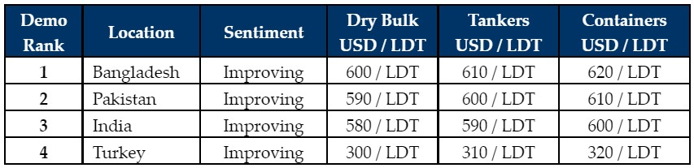

inWeekly Demolition Reports25/10/2021

After the recent brief lull, levels have spiked in the sub-continent once again last week, pushing above USD 600/LDT on most available units once again.
The current diet consists primarily of tankers and offshore vessels, such has been the strength of the dry bulk and container sectors for much of this year.
The volume of tonnage also seems to be increasing as we approach the end of the year, with many owners seeing these reinvigorated numbers (at and above USD 600/LDT) as the ideal opportunity to cash in and balance the books after another woeful year in the wet sector.
Local steel plate prices remain positively positioned across the sub-continent and even Turkey – the key driver behind this recent rise in rates – as futures are also displaying few signs of concern as we look set for a busy end to the year.
The currency had endured some worrying moments in Pakistan and especially in Turkey, whilst Indian steel plate prices enjoyed a rapid rise to put them in contention once again.
However, the biggest news of the week came from Bangladesh and Turkey, where both markets surged this week. In Bangladesh, off the back of firming steel plate prices and after a period of decline that saw many local offers fall below USD 600/LDT, the markets saw price and demand come soaring back to the highest levels in the sub-continent once again.
Even in Turkey, after last week’s impressive jump in import steel prices, local offerings finally caught up and the markets jumped to where all types of units will generally fetch over USD 300/MT this week.
For week 43 of 2021, GMS demo rankings / pricing for the week are as below.

Download PDFSource: GMS,Inc.